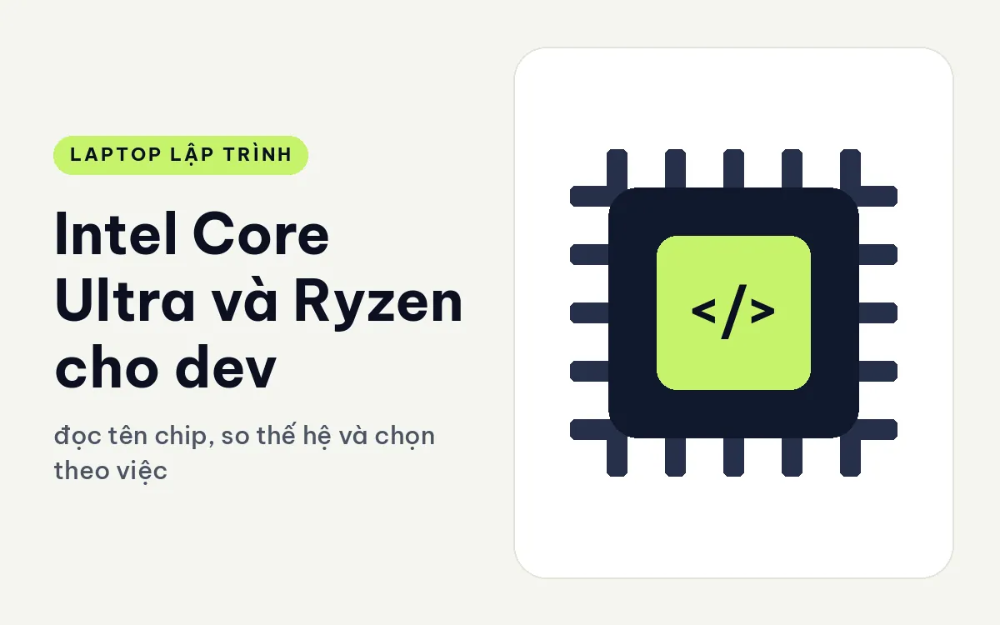
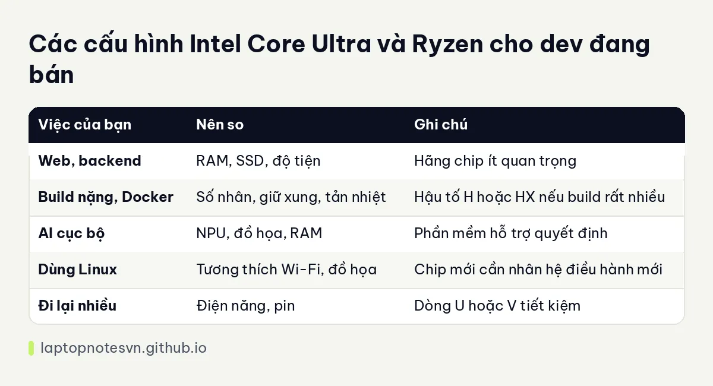

Intel Core Ultra và Ryzen cho dev - đọc tên chip, so thế hệ và chọn theo việc

Nhiều người mua laptop lập trình hỏi câu đầu tiên là Intel hay AMD tốt hơn. Câu hỏi này khó trả lời ngắn gọn, vì mỗi thế hệ chip mỗi hãng có điểm mạnh khác nhau, và khác biệt giữa hai hãng thường nhỏ hơn khác biệt giữa các dòng trong cùng một hãng. Điều quan trọng hơn là chọn đúng dòng, đúng thế hệ và đúng cấu hình đi kèm.
Bài này không xếp hạng hai hãng. Tôi hướng dẫn cách đọc tên chip, những thông số nên so sánh, và cách gắn chúng với công việc code của bạn, rồi nêu các máy đang bán. Mọi con số nhân, luồng, NPU lấy từ thông số công bố.
Đọc tên chip và các thông số chính
Với Intel Core Ultra, tên gồm dòng (Ultra 5, 7, 9), số hiệu và hậu tố như U, H, HX hay V. Dòng càng cao thường càng nhiều nhân và xung cao, nhưng số hiệu và hậu tố mới cho biết chip thuộc nhóm điện năng nào. Chip hậu tố V thường hướng đến tiết kiệm điện và đồ họa tích hợp. Bạn có thể xem giải thích hậu tố trong bài CPU U, H, HX nào hợp build code.
Với AMD Ryzen, tên có dòng (Ryzen 5, 7, 9) cùng chữ AI ở các đời mới có NPU, rồi dãy số. Cách đặt tên có quy tắc riêng và hay đổi theo thế hệ, nên đọc bảng thông số của từng model chính xác hơn đoán qua tên.
Các thông số đáng so là số nhân, số luồng, xung, bộ nhớ đệm, NPU (TOPS) và đồ họa tích hợp. Số nhân và luồng ảnh hưởng đến build song song, còn đồ họa tích hợp quyết định bạn có cần card rời hay không.
Nên so theo việc của dev
Với code web và backend, bạn không cảm nhận được chênh lệch giữa Intel và AMD khi cùng phân khúc. Điều quyết định là RAM, SSD và độ tiện dụng của máy. Đừng chọn máy chỉ vì hãng chip.
Với build nặng, Docker và máy ảo, số nhân và khả năng giữ xung bền quan trọng. Lúc này, bạn nên so số nhân thực sự, công suất chip trong máy và tản nhiệt, chứ không so hãng. Hai máy dùng chip hai hãng nhưng cùng phân khúc điện năng thường cho trải nghiệm gần nhau.
Với việc có liên quan đến AI cục bộ, so NPU và đồ họa tích hợp. Chip đời mới của cả hai hãng đều có NPU từ khoảng 45 TOPS trở lên, nên điểm khác biệt thực tế nằm ở phần mềm hỗ trợ. Chi tiết nằm ở bài NPU trên laptop dev dùng được gì.
Với dev dùng Linux, hãy kiểm tra độ tương thích của Wi-Fi, đồ họa và cảm biến với bản phân phối của bạn. Cả hai hãng đều hỗ trợ tốt nói chung, nhưng chip rất mới đôi khi cần nhân hệ điều hành mới.
Đồ họa tích hợp và thế hệ chip
Các chip Core Ultra đời mới đi kèm đồ họa Arc tích hợp khá, đủ cho hiển thị nhiều màn hình và vài tác vụ đồ họa nhẹ. Nếu bạn không làm game hay học máy, đồ họa tích hợp thường là đủ và máy nhẹ hơn.
Cũng đừng so chip cũ và chip mới chỉ bằng dòng. Một chip Ultra 5 đời mới có thể ngang hoặc hơn chip Ultra 7 đời cũ ở việc nhẹ, nhờ kiến trúc tiết kiệm điện hơn. Khi chọn máy cũ giá tốt, hãy nhìn thế hệ trước, rồi mới nhìn dòng.
Bảng so nhanh

| Việc của bạn | Nên so | Ghi chú |
|---|---|---|
| Web, backend | RAM, SSD, độ tiện | Hãng chip ít quan trọng |
| Build nặng, Docker | Số nhân, giữ xung, tản nhiệt | Hậu tố H hoặc HX nếu build rất nhiều |
| AI cục bộ | NPU, đồ họa, RAM | Phần mềm hỗ trợ quyết định |
| Dùng Linux | Tương thích Wi-Fi, đồ họa | Chip mới cần nhân hệ điều hành mới |
| Đi lại nhiều | Điện năng, pin | Dòng U hoặc V tiết kiệm |
Áp vào máy đang bán
Lenovo ThinkPad E14 Gen 8 (2026) cho bạn chọn cả hai hãng trên cùng khung máy. Bản AMD Ryzen AI 5 330 có 4 nhân 8 luồng, NPU 50 TOPS, hai khe RAM tối đa 64GB. Bản Intel Core 7 350 có một khe tối đa 32GB và hai cổng Thunderbolt 4. Hai bản này nhắc rằng cùng tên máy, lựa chọn chip còn kéo theo cổng và RAM.
Lenovo ThinkPad T14 Gen 6 (2025) có bản Ultra 7 258V và Ultra 5 228V với RAM 32GB LPDDR5x 8533, đồ họa Arc 140V và 130V, nặng 1,53 kg. Họ chip V tập trung tiết kiệm điện, hợp người đi lại.
DELL XPS 16 DA16260 (2026) dùng Core Ultra X9 388H 16 nhân, NPU 50 TOPS, 32GB RAM, màn 16 inch. Chip thuộc nhóm hiệu năng cao hơn, cho người cần sức mạnh trong thân máy gọn.
Muốn xem một thế hệ chip cụ thể trong máy thật, bài ThinkPad T14 Gen 6 cho lập trình là một ví dụ.
Đăng ngày 09/11/2026